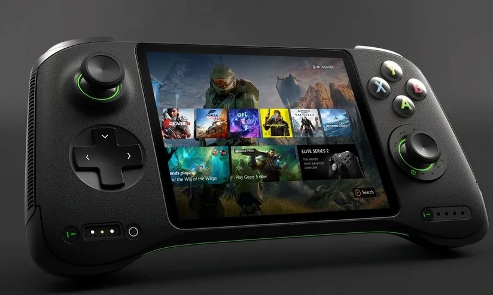

Portátil do Xbox está em desenvolvimento, mas não deve chegar tão cedo
(14/11/2024)
Microsoft está trabalhando em um "Xbox portátil totalmente nativo"

Em março deste ano, o *Windows Central* revelou que a Microsoft estava desenvolvendo protótipos de um "Xbox portátil totalmente nativo". Agora, novas informações oficiais confirmam que o console portátil da gigante norte-americana realmente existe — mas, infelizmente, ainda levará algum tempo para chegar às prateleiras.
Embora seja uma boa notícia saber que o portátil do Xbox está em andamento, o lançamento do dispositivo está ainda distante e não há uma previsão concreta para sua chegada. Quem confirmou isso foi Phil Spencer, chefe da Xbox Gaming, em uma entrevista recente ao Bloomberg.
Spencer afirmou que, embora a Microsoft tenha planos de lançar algo nesse segmento de consoles portáteis, o produto final ainda está a vários anos de distância. Atualmente, a equipe de engenheiros da empresa está trabalhando em protótipos e avaliando as melhores opções para o dispositivo, com base nas lições aprendidas com o mercado atual."Acho que nossa equipe poderia criar algo realmente inovador, mas queremos que esse desenvolvimento seja guiado pelo que estamos aprendendo agora e pelo que está acontecendo no mercado", explicou o executivo.
Acesse a notícia completa em: https://www.tecmundo.com.br/voxel/500030-portatil-do-xbox-esta-em-desenvolvimento-mas-nao-deve-chegar-tao-cedo.htm